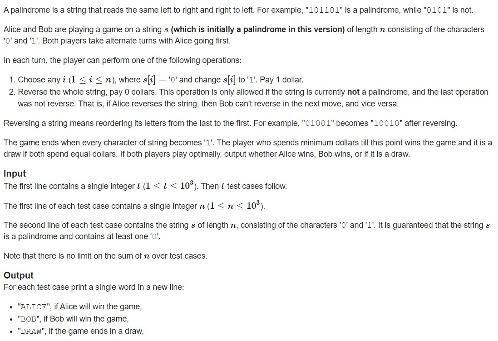
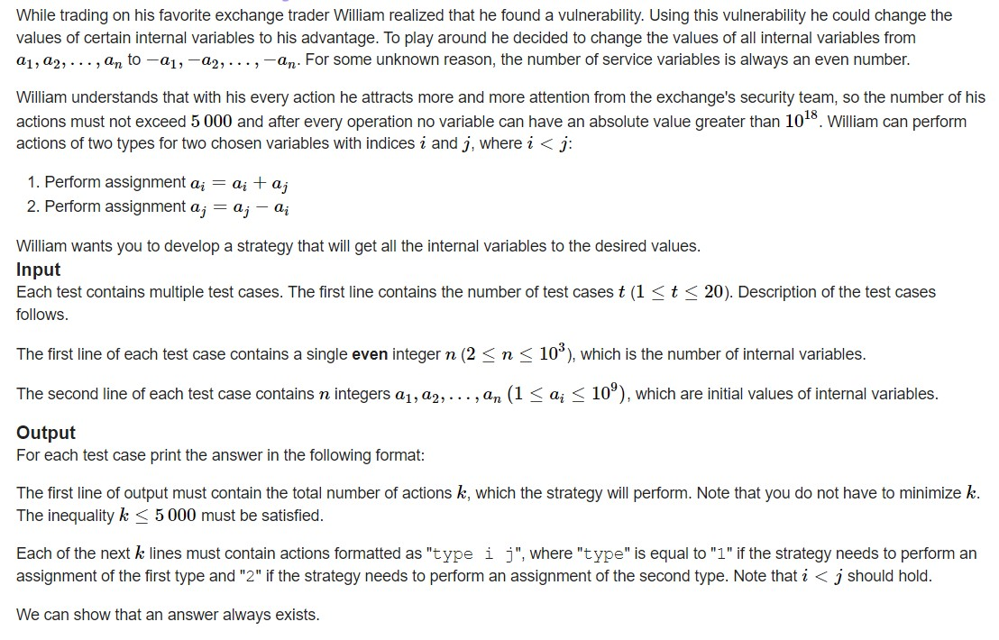
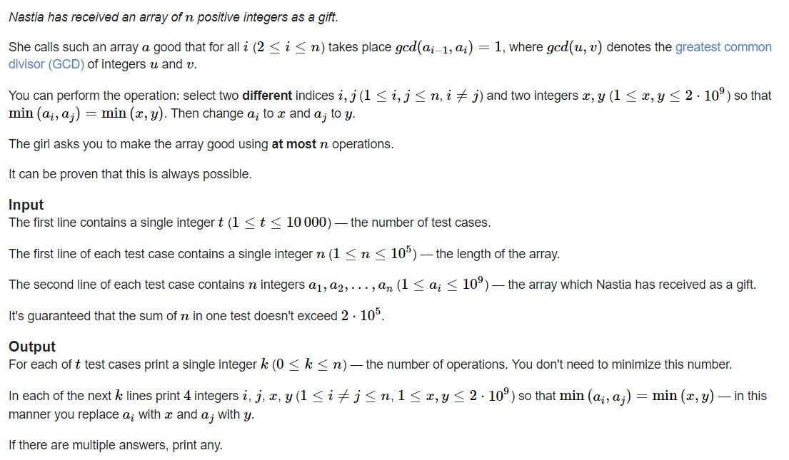

<!DOCTYPE html>


<html lang="zh-CN">
  

    <head>
      <meta charset="utf-8" />
        
      <meta
        name="viewport"
        content="width=device-width, initial-scale=1, maximum-scale=1"
      />
      <title>22.11.4刷题记录 |  jan&#39;s Blog</title>
  <meta name="generator" content="hexo-theme-ayer">
      
      <link rel="shortcut icon" href="/favicon.ico" />
       
<link rel="stylesheet" href="/dist/main.css">

      
<link rel="stylesheet" href="/css/fonts/remixicon.css">

      
<link rel="stylesheet" href="/css/custom.css">
 
      <script src="https://cdn.staticfile.org/pace/1.2.4/pace.min.js"></script>
       
 

      <link
        rel="stylesheet"
        href="https://cdn.jsdelivr.net/npm/@sweetalert2/theme-bulma@5.0.1/bulma.min.css"
      />
      <script src="https://cdn.jsdelivr.net/npm/sweetalert2@11.0.19/dist/sweetalert2.min.js"></script>

      <!-- mermaid -->
      
      <style>
        .swal2-styled.swal2-confirm {
          font-size: 1.6rem;
        }
      </style>
    <link rel="alternate" href="/atom.xml" title="jan's Blog" type="application/atom+xml">
</head>
  </html>
</html>


<body>
  <div id="app">
    
      
    <main class="content on">
      <section class="outer">
  <article
  id="post-22-11-4刷题记录"
  class="article article-type-post"
  itemscope
  itemprop="blogPost"
  data-scroll-reveal
>
  <div class="article-inner">
    
    <header class="article-header">
       
<h1 class="article-title sea-center" style="border-left:0" itemprop="name">
  22.11.4刷题记录
</h1>
 

      
    </header>
     
    <div class="article-meta">
      <a href="/2022/11/04/22-11-4%E5%88%B7%E9%A2%98%E8%AE%B0%E5%BD%95/" class="article-date">
  <time datetime="2022-11-04T14:53:15.000Z" itemprop="datePublished">2022-11-04</time>
</a>   
<div class="word_count">
    <span class="post-time">
        <span class="post-meta-item-icon">
            <i class="ri-quill-pen-line"></i>
            <span class="post-meta-item-text"> 字数统计:</span>
            <span class="post-count">1k</span>
        </span>
    </span>

    <span class="post-time">
        &nbsp; | &nbsp;
        <span class="post-meta-item-icon">
            <i class="ri-book-open-line"></i>
            <span class="post-meta-item-text"> 阅读时长≈</span>
            <span class="post-count">5 分钟</span>
        </span>
    </span>
</div>
 
    </div>
      
    <div class="tocbot"></div>


  
    <div class="article-entry" itemprop="articleBody">
       
  <p>忙碌的一天还是要靠写个笔记来结束，还是干自己喜欢的事情舒服。</p>
<hr>
<h1 id="Palindrome-Game-easy-version"><a href="#Palindrome-Game-easy-version" class="headerlink" title="Palindrome Game (easy version)"></a><a target="_blank" rel="noopener" href="https://codeforces.com/problemset/problem/1527/B1">Palindrome Game (easy version)</a></h1><p><br>这种题想的出就做得出，想不出就做不出了。<br>首先胜负肯定与$0$的个数有关：<br>如果$0$的个数是偶数，那么$Bob$必赢：<br>因为$Bob$只需每次在$Alice$操作的位置的对称的位置操作，然后直到剩下最后一个$0$时对数组进行反转，这样$Bob$的费用永远比$Alice$的少$1$。<br>如果$0$的个数是奇数，那么除了$0$的个数是$1$时，$Alice$必赢:<br>因为个数是奇数就意味着中间肯定为$0$，$Alice$只需要先操作这个位置，然后数组还是保持对称的，那么整个过程将变成$Bob$为先手，参照上面的情况，$Alice$必赢。<br>代码：<br><figure class="highlight cpp"><table><tr><td class="gutter"><pre><span class="line">1</span><br><span class="line">2</span><br><span class="line">3</span><br><span class="line">4</span><br><span class="line">5</span><br><span class="line">6</span><br><span class="line">7</span><br><span class="line">8</span><br><span class="line">9</span><br><span class="line">10</span><br><span class="line">11</span><br><span class="line">12</span><br><span class="line">13</span><br><span class="line">14</span><br><span class="line">15</span><br><span class="line">16</span><br><span class="line">17</span><br><span class="line">18</span><br><span class="line">19</span><br><span class="line">20</span><br><span class="line">21</span><br><span class="line">22</span><br><span class="line">23</span><br><span class="line">24</span><br><span class="line">25</span><br><span class="line">26</span><br><span class="line">27</span><br><span class="line">28</span><br><span class="line">29</span><br><span class="line">30</span><br><span class="line">31</span><br></pre></td><td class="code"><pre><span class="line"><span class="meta">#<span class="keyword">include</span> <span class="string">&lt;bits/stdc++.h&gt;</span></span></span><br><span class="line"><span class="meta">#<span class="keyword">define</span> IOS ios_base::sync_with_stdio(0); cin.tie(0);</span></span><br><span class="line"><span class="meta">#<span class="keyword">define</span> INF 0x3f3f3f3f</span></span><br><span class="line"><span class="meta">#<span class="keyword">define</span> mod 1000000007</span></span><br><span class="line"><span class="meta">#<span class="keyword">define</span> PII pair<span class="string">&lt;int,int&gt;</span></span></span><br><span class="line"><span class="meta">#<span class="keyword">define</span> PLL pair<span class="string">&lt;ll,ll&gt;</span></span></span><br><span class="line"><span class="meta">#<span class="keyword">define</span> All(a) a.begin(),a.end()</span></span><br><span class="line"><span class="keyword">typedef</span> <span class="type">long</span> <span class="type">long</span> ll;</span><br><span class="line"><span class="keyword">using</span> <span class="keyword">namespace</span> std;</span><br><span class="line"><span class="type">int</span> t;string s;ll m;ll n;ll k;ll x;</span><br><span class="line"><span class="function"><span class="type">void</span> <span class="title">solve</span><span class="params">()</span></span>&#123;</span><br><span class="line">    cin&gt;&gt;n&gt;&gt;s;<span class="type">int</span> cnt0=<span class="number">0</span>;</span><br><span class="line">    <span class="keyword">for</span>(<span class="type">int</span> i=<span class="number">0</span>;i&lt;n;i++)&#123;</span><br><span class="line">        <span class="keyword">if</span>(s[i]==<span class="string">&#x27;0&#x27;</span>)cnt0++;</span><br><span class="line">    &#125;</span><br><span class="line">    <span class="keyword">if</span>(cnt0==<span class="number">1</span>)&#123;</span><br><span class="line">        cout&lt;&lt;<span class="string">&quot;BOB\n&quot;</span>;<span class="keyword">return</span>;</span><br><span class="line">    &#125;</span><br><span class="line">    <span class="keyword">if</span>(cnt0%<span class="number">2</span>==<span class="number">0</span>)&#123;</span><br><span class="line">        cout&lt;&lt;<span class="string">&quot;BOB\n&quot;</span>;<span class="keyword">return</span>;</span><br><span class="line">    &#125;<span class="keyword">else</span>&#123;</span><br><span class="line">        cout&lt;&lt;<span class="string">&quot;ALICE\n&quot;</span>;<span class="keyword">return</span>;</span><br><span class="line">    &#125;</span><br><span class="line"></span><br><span class="line">&#125;</span><br><span class="line"><span class="function"><span class="type">int</span> <span class="title">main</span><span class="params">()</span> </span>&#123;</span><br><span class="line">    IOS</span><br><span class="line">    cin &gt;&gt; t;</span><br><span class="line">    <span class="keyword">while</span> (t--)</span><br><span class="line">        <span class="built_in">solve</span>();</span><br><span class="line">&#125;</span><br></pre></td></tr></table></figure></p>
<h1 id="Lord-of-the-Values"><a href="#Lord-of-the-Values" class="headerlink" title="Lord of the Values"></a><a target="_blank" rel="noopener" href="https://codeforces.com/problemset/problem/1523/B">Lord of the Values</a></h1><p><br>这题有点小技巧，观察规则以及数据$n$的约束，可以知道答案一定是根据一对数来推出的。<br>对于一对数字$(a,b)$我们总能进行以下步骤变成$(-a,-b)$：</p>
<ul>
<li>将第一个数字加上第二个数字$-&gt;(a+b,b)$</li>
<li>把第二个数字减去第一个数字$-&gt;(a+b,-a)$</li>
<li>将第一个数字加上第二个数字$-&gt;(b,-a)$</li>
<li>把第二个数字减去第一个数字$-&gt;(b,-a-b)$</li>
<li>将第一个数字加上第二个数字$-&gt;(-a,-a-b)$</li>
<li>把第二个数字减去第一个数字$-&gt;(-a,-b)$</li>
</ul>
<p>然后答案就显而易见了<br>代码：<br><figure class="highlight cpp"><table><tr><td class="gutter"><pre><span class="line">1</span><br><span class="line">2</span><br><span class="line">3</span><br><span class="line">4</span><br><span class="line">5</span><br><span class="line">6</span><br><span class="line">7</span><br><span class="line">8</span><br><span class="line">9</span><br><span class="line">10</span><br><span class="line">11</span><br><span class="line">12</span><br><span class="line">13</span><br><span class="line">14</span><br><span class="line">15</span><br><span class="line">16</span><br><span class="line">17</span><br><span class="line">18</span><br><span class="line">19</span><br><span class="line">20</span><br><span class="line">21</span><br><span class="line">22</span><br><span class="line">23</span><br><span class="line">24</span><br><span class="line">25</span><br><span class="line">26</span><br><span class="line">27</span><br></pre></td><td class="code"><pre><span class="line"><span class="meta">#<span class="keyword">include</span> <span class="string">&lt;bits/stdc++.h&gt;</span></span></span><br><span class="line"><span class="meta">#<span class="keyword">define</span> IOS ios_base::sync_with_stdio(0); cin.tie(0);</span></span><br><span class="line"><span class="meta">#<span class="keyword">define</span> INF 0x3f3f3f3f</span></span><br><span class="line"><span class="meta">#<span class="keyword">define</span> mod 1000000007</span></span><br><span class="line"><span class="meta">#<span class="keyword">define</span> PII pair<span class="string">&lt;int,int&gt;</span></span></span><br><span class="line"><span class="meta">#<span class="keyword">define</span> PLL pair<span class="string">&lt;ll,ll&gt;</span></span></span><br><span class="line"><span class="meta">#<span class="keyword">define</span> All(a) a.begin(),a.end()</span></span><br><span class="line"><span class="keyword">typedef</span> <span class="type">long</span> <span class="type">long</span> ll;</span><br><span class="line"><span class="keyword">using</span> <span class="keyword">namespace</span> std;</span><br><span class="line"><span class="type">int</span> t;string s;ll m;ll n;ll k;ll x;</span><br><span class="line"><span class="function"><span class="type">void</span> <span class="title">solve</span><span class="params">()</span></span>&#123;</span><br><span class="line">    cin&gt;&gt;n;</span><br><span class="line">    <span class="keyword">for</span>(<span class="type">int</span> i=<span class="number">1</span>;i&lt;=n;i++)&#123;<span class="type">int</span> xx;cin&gt;&gt;xx;&#125;</span><br><span class="line">    cout&lt;&lt;(n/<span class="number">2</span>)*<span class="number">6</span>&lt;&lt;<span class="string">&quot;\n&quot;</span>;</span><br><span class="line">    <span class="keyword">for</span>(<span class="type">int</span> i=<span class="number">1</span>;i&lt;=n/<span class="number">2</span>;i++)&#123;</span><br><span class="line">        <span class="keyword">for</span>(<span class="type">int</span> j=<span class="number">1</span>;j&lt;=<span class="number">3</span>;j++) &#123;</span><br><span class="line">            cout &lt;&lt; <span class="number">1</span> &lt;&lt; <span class="string">&quot; &quot;</span> &lt;&lt; <span class="number">2</span> * i - <span class="number">1</span> &lt;&lt; <span class="string">&quot; &quot;</span> &lt;&lt; <span class="number">2</span> * i &lt;&lt; <span class="string">&quot;\n&quot;</span>;</span><br><span class="line">            cout &lt;&lt; <span class="number">2</span> &lt;&lt; <span class="string">&quot; &quot;</span> &lt;&lt; <span class="number">2</span> * i - <span class="number">1</span> &lt;&lt; <span class="string">&quot; &quot;</span> &lt;&lt; <span class="number">2</span> * i &lt;&lt; <span class="string">&quot;\n&quot;</span>;</span><br><span class="line">        &#125;</span><br><span class="line">    &#125;</span><br><span class="line">&#125;</span><br><span class="line"><span class="function"><span class="type">int</span> <span class="title">main</span><span class="params">()</span> </span>&#123;</span><br><span class="line">    IOS</span><br><span class="line">    cin &gt;&gt; t;</span><br><span class="line">    <span class="keyword">while</span> (t--)</span><br><span class="line">        <span class="built_in">solve</span>();</span><br><span class="line">&#125;</span><br></pre></td></tr></table></figure></p>
<h1 id="Nastia-and-a-Good-Array"><a href="#Nastia-and-a-Good-Array" class="headerlink" title="Nastia and a Good Array"></a><a target="_blank" rel="noopener" href="https://codeforces.com/problemset/problem/1521/B">Nastia and a Good Array</a></h1><p><br>这题看到$gcd(a_i,a_{i-1})$就感觉似曾相识，或许我们可以考虑将$a$数组转成连续的数，这样就肯定满足$gcd(a_i,a_{i-1})$。<br>至于怎么转，我选择把最小的数放在首，然后利用规则构造一个递增的连续数列。<br>代码：<br><figure class="highlight cpp"><table><tr><td class="gutter"><pre><span class="line">1</span><br><span class="line">2</span><br><span class="line">3</span><br><span class="line">4</span><br><span class="line">5</span><br><span class="line">6</span><br><span class="line">7</span><br><span class="line">8</span><br><span class="line">9</span><br><span class="line">10</span><br><span class="line">11</span><br><span class="line">12</span><br><span class="line">13</span><br><span class="line">14</span><br><span class="line">15</span><br><span class="line">16</span><br><span class="line">17</span><br><span class="line">18</span><br><span class="line">19</span><br><span class="line">20</span><br><span class="line">21</span><br><span class="line">22</span><br><span class="line">23</span><br><span class="line">24</span><br><span class="line">25</span><br><span class="line">26</span><br><span class="line">27</span><br><span class="line">28</span><br><span class="line">29</span><br><span class="line">30</span><br><span class="line">31</span><br><span class="line">32</span><br><span class="line">33</span><br><span class="line">34</span><br><span class="line">35</span><br><span class="line">36</span><br></pre></td><td class="code"><pre><span class="line"><span class="meta">#<span class="keyword">include</span> <span class="string">&lt;bits/stdc++.h&gt;</span></span></span><br><span class="line"><span class="meta">#<span class="keyword">define</span> IOS ios_base::sync_with_stdio(0); cin.tie(0);</span></span><br><span class="line"><span class="meta">#<span class="keyword">define</span> INF 0x3f3f3f3f</span></span><br><span class="line"><span class="meta">#<span class="keyword">define</span> mod 1000000007</span></span><br><span class="line"><span class="meta">#<span class="keyword">define</span> PII pair<span class="string">&lt;int,int&gt;</span></span></span><br><span class="line"><span class="meta">#<span class="keyword">define</span> PLL pair<span class="string">&lt;ll,ll&gt;</span></span></span><br><span class="line"><span class="meta">#<span class="keyword">define</span> All(a) a.begin(),a.end()</span></span><br><span class="line"><span class="keyword">typedef</span> <span class="type">long</span> <span class="type">long</span> ll;</span><br><span class="line"><span class="keyword">using</span> <span class="keyword">namespace</span> std;</span><br><span class="line"><span class="type">int</span> t;string s;ll m;ll n;ll k;ll x;</span><br><span class="line"><span class="function"><span class="type">void</span> <span class="title">solve</span><span class="params">()</span></span>&#123;</span><br><span class="line">    cin&gt;&gt;n;</span><br><span class="line">    <span class="function">vector&lt;<span class="type">int</span>&gt; <span class="title">v</span><span class="params">(n+<span class="number">3</span>)</span></span>;<span class="type">int</span> minx=INF;<span class="type">int</span> minc=<span class="number">1</span>;</span><br><span class="line">    <span class="keyword">for</span>(<span class="type">int</span> i=<span class="number">1</span>;i&lt;=n;i++)&#123;</span><br><span class="line">        cin&gt;&gt;v[i];</span><br><span class="line">        <span class="keyword">if</span>(minx&gt;v[i])&#123;</span><br><span class="line">            minx=v[i];</span><br><span class="line">            minc=i;</span><br><span class="line">        &#125;</span><br><span class="line">    &#125;</span><br><span class="line">    <span class="keyword">if</span>(minc!=<span class="number">1</span>)&#123;</span><br><span class="line">        cout&lt;&lt;n&lt;&lt;<span class="string">&quot;\n&quot;</span>;</span><br><span class="line">        cout&lt;&lt;<span class="number">1</span>&lt;&lt;<span class="string">&quot; &quot;</span>&lt;&lt;minc&lt;&lt;<span class="string">&quot; &quot;</span>&lt;&lt;minx&lt;&lt;<span class="string">&quot; &quot;</span>&lt;&lt;v[<span class="number">1</span>]&lt;&lt;<span class="string">&quot;\n&quot;</span>;</span><br><span class="line">    &#125;<span class="keyword">else</span>&#123;</span><br><span class="line">        cout&lt;&lt;n<span class="number">-1</span>&lt;&lt;<span class="string">&quot;\n&quot;</span>;</span><br><span class="line">    &#125;</span><br><span class="line">    <span class="keyword">for</span>(<span class="type">int</span> i=<span class="number">2</span>;i&lt;=n;i++)&#123;</span><br><span class="line">        cout&lt;&lt;<span class="number">1</span>&lt;&lt;<span class="string">&quot; &quot;</span>&lt;&lt;i&lt;&lt;<span class="string">&quot; &quot;</span>&lt;&lt;minx&lt;&lt;<span class="string">&quot; &quot;</span>&lt;&lt;minx+i<span class="number">-1</span>&lt;&lt;<span class="string">&quot;\n&quot;</span>;</span><br><span class="line">    &#125;</span><br><span class="line">&#125;</span><br><span class="line"><span class="function"><span class="type">int</span> <span class="title">main</span><span class="params">()</span> </span>&#123;</span><br><span class="line">    IOS</span><br><span class="line">    cin &gt;&gt; t;</span><br><span class="line">    <span class="keyword">while</span> (t--)</span><br><span class="line">        <span class="built_in">solve</span>();</span><br><span class="line">&#125;</span><br></pre></td></tr></table></figure></p>
 
      <!-- reward -->
      
      <div id="reword-out">
        <div id="reward-btn">
          打赏
        </div>
      </div>
      
    </div>
    

    <!-- copyright -->
    
    <div class="declare">
      <ul class="post-copyright">
        <li>
          <i class="ri-copyright-line"></i>
          <strong>版权声明： </strong>
          
          本博客所有文章除特别声明外，著作权归作者所有。转载请注明出处！
          
        </li>
      </ul>
    </div>
    
    <footer class="article-footer">
       
<div class="share-btn">
      <span class="share-sns share-outer">
        <i class="ri-share-forward-line"></i>
        分享
      </span>
      <div class="share-wrap">
        <i class="arrow"></i>
        <div class="share-icons">
          
          <a class="weibo share-sns" href="javascript:;" data-type="weibo">
            <i class="ri-weibo-fill"></i>
          </a>
          <a class="weixin share-sns wxFab" href="javascript:;" data-type="weixin">
            <i class="ri-wechat-fill"></i>
          </a>
          <a class="qq share-sns" href="javascript:;" data-type="qq">
            <i class="ri-qq-fill"></i>
          </a>
          <a class="douban share-sns" href="javascript:;" data-type="douban">
            <i class="ri-douban-line"></i>
          </a>
          <!-- <a class="qzone share-sns" href="javascript:;" data-type="qzone">
            <i class="icon icon-qzone"></i>
          </a> -->
          
          <a class="facebook share-sns" href="javascript:;" data-type="facebook">
            <i class="ri-facebook-circle-fill"></i>
          </a>
          <a class="twitter share-sns" href="javascript:;" data-type="twitter">
            <i class="ri-twitter-fill"></i>
          </a>
          <a class="google share-sns" href="javascript:;" data-type="google">
            <i class="ri-google-fill"></i>
          </a>
        </div>
      </div>
</div>

<div class="wx-share-modal">
    <a class="modal-close" href="javascript:;"><i class="ri-close-circle-line"></i></a>
    <p>扫一扫，分享到微信</p>
    <div class="wx-qrcode">
      
    </div>
</div>

<div id="share-mask"></div>  
    </footer>
  </div>

   
  <nav class="article-nav">
    
    
      <a href="/2022/11/03/22-11-3%E5%88%B7%E9%A2%98%E8%AE%B0%E5%BD%95/" class="article-nav-link">
        <strong class="article-nav-caption">下一篇</strong>
        <div class="article-nav-title">22.11.3刷题记录</div>
      </a>
    
  </nav>

  
   
  
   
    <script src="https://cdn.staticfile.org/twikoo/1.4.18/twikoo.all.min.js"></script>
    <div id="twikoo" class="twikoo"></div>
    <script>
        twikoo.init({
            envId: ""
        })
    </script>
 
</article>

</section>
      <footer class="footer">
  <div class="outer">
    <ul>
      <li>
        Copyrights &copy;
        2015-2022
        <i class="ri-heart-fill heart_icon"></i> Jan
      </li>
    </ul>
    <ul>
      <li>
        
      </li>
    </ul>
    <ul>
      <li>
        
        
        <span>
  <span><i class="ri-user-3-fill"></i>访问人数:<span id="busuanzi_value_site_uv"></span></span>
  <span class="division">|</span>
  <span><i class="ri-eye-fill"></i>浏览次数:<span id="busuanzi_value_page_pv"></span></span>
</span>
        
      </li>
    </ul>
    <ul>
      
    </ul>
    <ul>
      
    </ul>
    <ul>
      <li>
        <!-- cnzz统计 -->
        
        <script type="text/javascript" src='https://s9.cnzz.com/z_stat.php?id=1278069914&amp;web_id=1278069914'></script>
        
      </li>
    </ul>
  </div>
</footer>    
    </main>
    <div class="float_btns">
      <div class="totop" id="totop">
  <i class="ri-arrow-up-line"></i>
</div>

<div class="todark" id="todark">
  <i class="ri-moon-line"></i>
</div>

    </div>
    <aside class="sidebar on">
      <button class="navbar-toggle"></button>
<nav class="navbar">
  
  <div class="logo">
    <a href="/"></a>
  </div>
  
  <ul class="nav nav-main">
    
    <li class="nav-item">
      <a class="nav-item-link" href="/">主页</a>
    </li>
    
    <li class="nav-item">
      <a class="nav-item-link" href="/archives">归档</a>
    </li>
    
    <li class="nav-item">
      <a class="nav-item-link" href="/categories">分类</a>
    </li>
    
    <li class="nav-item">
      <a class="nav-item-link" href="/tags">标签</a>
    </li>
    
    <li class="nav-item">
      <a class="nav-item-link" href="/tags/%E6%97%85%E8%A1%8C/">旅行</a>
    </li>
    
    <li class="nav-item">
      <a class="nav-item-link" target="_blank" rel="noopener" href="http://shenyu-vip.lofter.com">摄影</a>
    </li>
    
    <li class="nav-item">
      <a class="nav-item-link" href="/friends">友链</a>
    </li>
    
    <li class="nav-item">
      <a class="nav-item-link" href="/2019/about">关于我</a>
    </li>
    
  </ul>
</nav>
<nav class="navbar navbar-bottom">
  <ul class="nav">
    <li class="nav-item">
      
      <a class="nav-item-link nav-item-search"  title="搜索">
        <i class="ri-search-line"></i>
      </a>
      
      
      <a class="nav-item-link" target="_blank" href="/atom.xml" title="RSS Feed">
        <i class="ri-rss-line"></i>
      </a>
      
    </li>
  </ul>
</nav>
<div class="search-form-wrap">
  <div class="local-search local-search-plugin">
  <input type="search" id="local-search-input" class="local-search-input" placeholder="Search...">
  <div id="local-search-result" class="local-search-result"></div>
</div>
</div>
    </aside>
    <div id="mask"></div>

<!-- #reward -->
<div id="reward">
  <span class="close"><i class="ri-close-line"></i></span>
  <p class="reward-p"><i class="ri-cup-line"></i>请我喝杯咖啡吧~</p>
  <div class="reward-box">
    
    
  </div>
</div>
    
<script src="/js/jquery-3.6.0.min.js"></script>
 
<script src="/js/lazyload.min.js"></script>

<!-- Tocbot -->
 
<script src="/js/tocbot.min.js"></script>

<script>
  tocbot.init({
    tocSelector: ".tocbot",
    contentSelector: ".article-entry",
    headingSelector: "h1, h2, h3, h4, h5, h6",
    hasInnerContainers: true,
    scrollSmooth: true,
    scrollContainer: "main",
    positionFixedSelector: ".tocbot",
    positionFixedClass: "is-position-fixed",
    fixedSidebarOffset: "auto",
  });
</script>

<script src="https://cdn.staticfile.org/jquery-modal/0.9.2/jquery.modal.min.js"></script>
<link
  rel="stylesheet"
  href="https://cdn.staticfile.org/jquery-modal/0.9.2/jquery.modal.min.css"
/>
<script src="https://cdn.staticfile.org/justifiedGallery/3.8.1/js/jquery.justifiedGallery.min.js"></script>

<script src="/dist/main.js"></script>

<!-- ImageViewer -->
 <!-- Root element of PhotoSwipe. Must have class pswp. -->
<div class="pswp" tabindex="-1" role="dialog" aria-hidden="true">

    <!-- Background of PhotoSwipe. 
         It's a separate element as animating opacity is faster than rgba(). -->
    <div class="pswp__bg"></div>

    <!-- Slides wrapper with overflow:hidden. -->
    <div class="pswp__scroll-wrap">

        <!-- Container that holds slides. 
            PhotoSwipe keeps only 3 of them in the DOM to save memory.
            Don't modify these 3 pswp__item elements, data is added later on. -->
        <div class="pswp__container">
            <div class="pswp__item"></div>
            <div class="pswp__item"></div>
            <div class="pswp__item"></div>
        </div>

        <!-- Default (PhotoSwipeUI_Default) interface on top of sliding area. Can be changed. -->
        <div class="pswp__ui pswp__ui--hidden">

            <div class="pswp__top-bar">

                <!--  Controls are self-explanatory. Order can be changed. -->

                <div class="pswp__counter"></div>

                <button class="pswp__button pswp__button--close" title="Close (Esc)"></button>

                <button class="pswp__button pswp__button--share" style="display:none" title="Share"></button>

                <button class="pswp__button pswp__button--fs" title="Toggle fullscreen"></button>

                <button class="pswp__button pswp__button--zoom" title="Zoom in/out"></button>

                <!-- Preloader demo http://codepen.io/dimsemenov/pen/yyBWoR -->
                <!-- element will get class pswp__preloader--active when preloader is running -->
                <div class="pswp__preloader">
                    <div class="pswp__preloader__icn">
                        <div class="pswp__preloader__cut">
                            <div class="pswp__preloader__donut"></div>
                        </div>
                    </div>
                </div>
            </div>

            <div class="pswp__share-modal pswp__share-modal--hidden pswp__single-tap">
                <div class="pswp__share-tooltip"></div>
            </div>

            <button class="pswp__button pswp__button--arrow--left" title="Previous (arrow left)">
            </button>

            <button class="pswp__button pswp__button--arrow--right" title="Next (arrow right)">
            </button>

            <div class="pswp__caption">
                <div class="pswp__caption__center"></div>
            </div>

        </div>

    </div>

</div>

<link rel="stylesheet" href="https://cdn.staticfile.org/photoswipe/4.1.3/photoswipe.min.css">
<link rel="stylesheet" href="https://cdn.staticfile.org/photoswipe/4.1.3/default-skin/default-skin.min.css">
<script src="https://cdn.staticfile.org/photoswipe/4.1.3/photoswipe.min.js"></script>
<script src="https://cdn.staticfile.org/photoswipe/4.1.3/photoswipe-ui-default.min.js"></script>

<script>
    function viewer_init() {
        let pswpElement = document.querySelectorAll('.pswp')[0];
        let $imgArr = document.querySelectorAll(('.article-entry img:not(.reward-img)'))

        $imgArr.forEach(($em, i) => {
            $em.onclick = () => {
                // slider展开状态
                // todo: 这样不好，后面改成状态
                if (document.querySelector('.left-col.show')) return
                let items = []
                $imgArr.forEach(($em2, i2) => {
                    let img = $em2.getAttribute('data-idx', i2)
                    let src = $em2.getAttribute('data-target') || $em2.getAttribute('src')
                    let title = $em2.getAttribute('alt')
                    // 获得原图尺寸
                    const image = new Image()
                    image.src = src
                    items.push({
                        src: src,
                        w: image.width || $em2.width,
                        h: image.height || $em2.height,
                        title: title
                    })
                })
                var gallery = new PhotoSwipe(pswpElement, PhotoSwipeUI_Default, items, {
                    index: parseInt(i)
                });
                gallery.init()
            }
        })
    }
    viewer_init()
</script> 
<!-- MathJax -->
 <script type="text/x-mathjax-config">
  MathJax.Hub.Config({
      tex2jax: {
          inlineMath: [ ['$','$'], ["\\(","\\)"]  ],
          processEscapes: true,
          skipTags: ['script', 'noscript', 'style', 'textarea', 'pre', 'code']
      }
  });

  MathJax.Hub.Queue(function() {
      var all = MathJax.Hub.getAllJax(), i;
      for(i=0; i < all.length; i += 1) {
          all[i].SourceElement().parentNode.className += ' has-jax';
      }
  });
</script>

<script src="https://cdn.staticfile.org/mathjax/2.7.7/MathJax.js"></script>
<script src="https://cdn.staticfile.org/mathjax/2.7.7/config/TeX-AMS-MML_HTMLorMML-full.js"></script>
<script>
  var ayerConfig = {
    mathjax: true,
  };
</script>

<!-- Katex -->
 
    
        <link rel="stylesheet" href="https://cdn.staticfile.org/KaTeX/0.15.1/katex.min.css">
        <script src="https://cdn.staticfile.org/KaTeX/0.15.1/katex.min.js"></script>
        <script src="https://cdn.staticfile.org/KaTeX/0.15.1/contrib/auto-render.min.js"></script>
        
            <script src="https://cdn.staticfile.org/KaTeX/0.15.1/contrib/copy-tex.min.js"></script>
            <link rel="stylesheet" href="https://cdn.staticfile.org/KaTeX/0.15.1/contrib/copy-tex.min.css">
        
    
 
<!-- busuanzi  -->
 
<script src="/js/busuanzi-2.3.pure.min.js"></script>
 
<!-- ClickLove -->

<!-- ClickBoom1 -->

<!-- ClickBoom2 -->

<!-- CodeCopy -->
 
<link rel="stylesheet" href="/css/clipboard.css">
 <script src="https://cdn.staticfile.org/clipboard.js/2.0.10/clipboard.min.js"></script>
<script>
  function wait(callback, seconds) {
    var timelag = null;
    timelag = window.setTimeout(callback, seconds);
  }
  !function (e, t, a) {
    var initCopyCode = function(){
      var copyHtml = '';
      copyHtml += '<button class="btn-copy" data-clipboard-snippet="">';
      copyHtml += '<i class="ri-file-copy-2-line"></i><span>COPY</span>';
      copyHtml += '</button>';
      $(".highlight .code pre").before(copyHtml);
      $(".article pre code").before(copyHtml);
      var clipboard = new ClipboardJS('.btn-copy', {
        target: function(trigger) {
          return trigger.nextElementSibling;
        }
      });
      clipboard.on('success', function(e) {
        let $btn = $(e.trigger);
        $btn.addClass('copied');
        let $icon = $($btn.find('i'));
        $icon.removeClass('ri-file-copy-2-line');
        $icon.addClass('ri-checkbox-circle-line');
        let $span = $($btn.find('span'));
        $span[0].innerText = 'COPIED';
        
        wait(function () { // 等待两秒钟后恢复
          $icon.removeClass('ri-checkbox-circle-line');
          $icon.addClass('ri-file-copy-2-line');
          $span[0].innerText = 'COPY';
        }, 2000);
      });
      clipboard.on('error', function(e) {
        e.clearSelection();
        let $btn = $(e.trigger);
        $btn.addClass('copy-failed');
        let $icon = $($btn.find('i'));
        $icon.removeClass('ri-file-copy-2-line');
        $icon.addClass('ri-time-line');
        let $span = $($btn.find('span'));
        $span[0].innerText = 'COPY FAILED';
        
        wait(function () { // 等待两秒钟后恢复
          $icon.removeClass('ri-time-line');
          $icon.addClass('ri-file-copy-2-line');
          $span[0].innerText = 'COPY';
        }, 2000);
      });
    }
    initCopyCode();
  }(window, document);
</script>
 
<!-- CanvasBackground -->
 
<script src="/js/dz.js"></script>
 
<script>
  if (window.mermaid) {
    mermaid.initialize({ theme: "forest" });
  }
</script>


    
    

  </div>
<script type="text/x-mathjax-config">
    MathJax.Hub.Config({
        tex2jax: {
            inlineMath: [ ["$","$"], ["\\(","\\)"] ],
            skipTags: ['script', 'noscript', 'style', 'textarea', 'pre', 'code'],
            processEscapes: true
        }
    });
    MathJax.Hub.Queue(function() {
        var all = MathJax.Hub.getAllJax();
        for (var i = 0; i < all.length; ++i)
            all[i].SourceElement().parentNode.className += ' has-jax';
    });
</script>
<script src="https://cdnjs.cloudflare.com/ajax/libs/mathjax/2.7.1/MathJax.js?config=TeX-MML-AM_CHTML"></script>

</body>

</html>